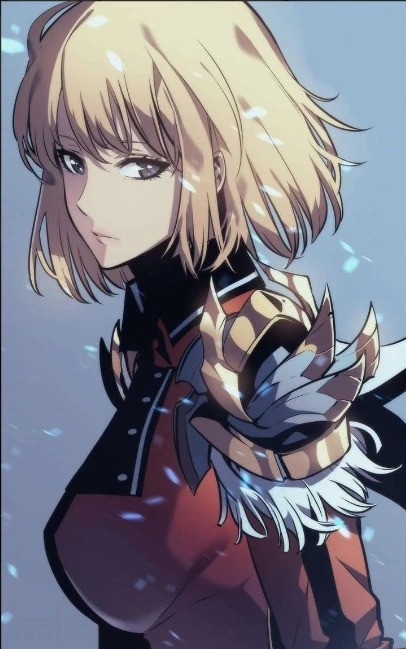

| Name | Choi Se-Yeon | |
| Sex | Female | |
| Age | 20 - 23 | |
| Body Type/ Appearance | Athletic | |
| Occupation | Dimensional World Monster Hunter | |
| Ethnicity | Korean | |
| Astrological Sign | Virgo | |
| Favorite Food | Korean Barbeque | |
| Hobbies | Building Gundams | |
| Likes: | Reading manga | Watching anime on her days off |
| Dislikes: | Hospitals |
| Conscious Desire | To solve the riddle of her lost past |
| Unconscious Desire | To not feel alone in a world that is foreign to her |
| Strengths | Self-Reliant, Insightful, Empathic, Ruthless to Enemies who attack her |
| Weaknesses | Prefers to Work Alone, Distrustful, Sharp-Tongued |
| Dark Side | Unknown powers within an unknown body |
| Traits They Admire in Others | Out -of-Box Thinking, Competent, Benevolent |
| Traits They Hate in Others | Closed-minded, Cruel, Despotic, Pompous |
| Cha Hae-In | Cha Hae-In>
 |
| Erza Scarlet | Erza Scarlet>
|